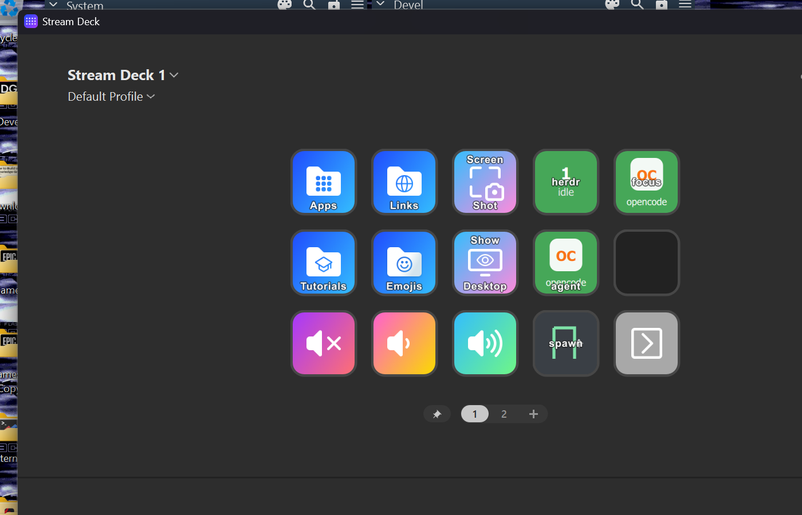
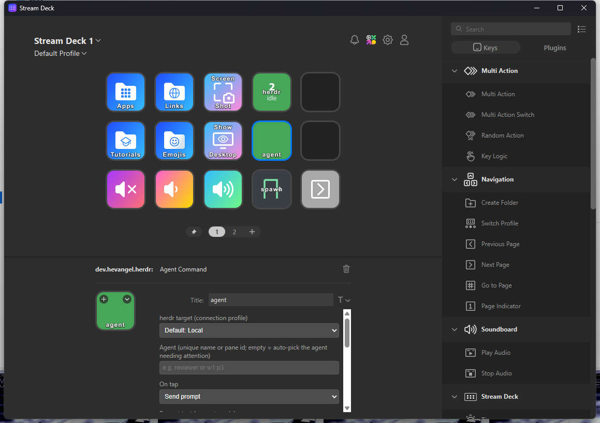
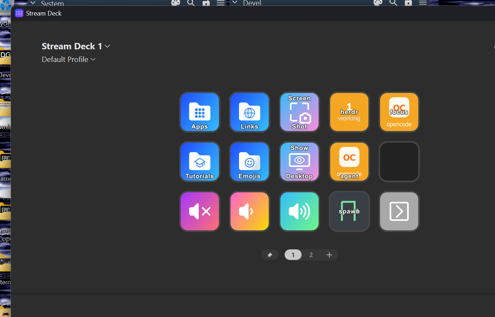
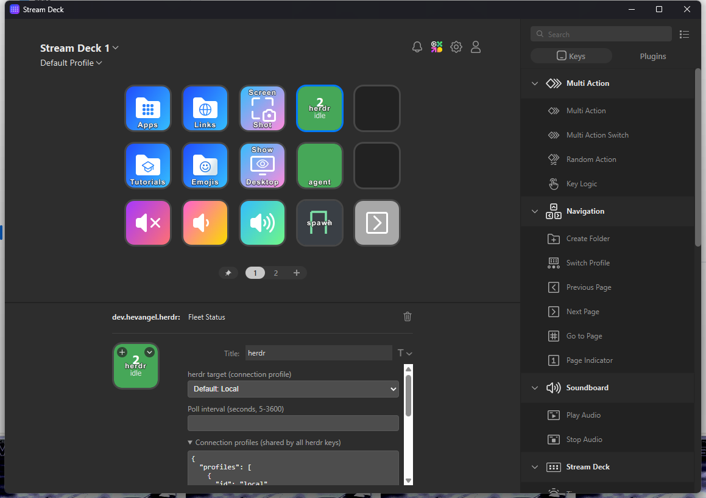
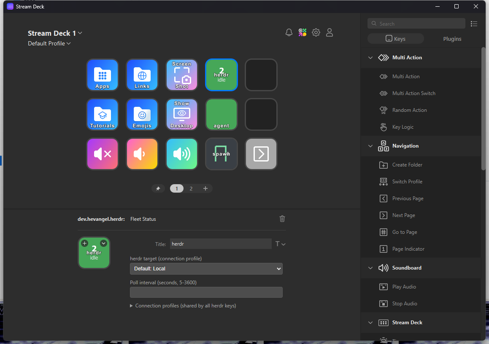

herdr Stream Deck — User Guide
Drive herdr — your herd of AI coding agents — from physical Stream Deck keys: watch agent states at a glance, send prompts and keystrokes, interrupt, and spawn new agents. Works with herdr running locally, in WSL, over SSH on a Linux box, or inside Docker — local or reached through SSH.
Fleet StatusAgent CommandAgent FocusSpawn Agent

1. Install
Requires Node.js 20+ and the Elgato Stream Deck app 7.1 or newer (herdr 0.9.4+ installed wherever the keys will target it).
git clone https://github.com/hevangel/herdr-stream-deck.git
cd herdr-stream-deck
npm install
npm run build
npx streamdeck link dev.hevangel.herdr.sdPlugin2. The three actions
Fleet Status — the whole herd on one key
Polls herdr agent list every few seconds and shows:
- Big number — total live agents, with the worst state named under it.
- Key color — urgency: red = blocked, amber = working, blue = done, green = idle, gray = no agents.
- Tap — force an immediate refresh.
Agent Command — talk to one agent
Tap sends a prompt (or keystrokes) to a pinned agent. Hold the key for ≥600 ms to send the interrupt keys
(ctrl+c by default). Pin nothing and it auto-targets whoever needs attention: blocked first,
then working, done, idle. The key shows the target agent's live state color.

Agent Focus — one key per agent, press to jump
Pins one agent (by unique name or pane id — the ones you see in herdr's agent panel). The key shows
the agent's kind icon, its name and live state color. Pressing it runs herdr agent focus:
herdr switches to the tab hosting that agent and marks it seen. Add one key per agent you flip between.

Spawn Agent — one key, one new agent
Press to split a pane in the target herdr session and start an agent in it
(herdr pane split → herdr agent start). Configure the agent kind
(claude, codex, gemini, cursor, droid, …),
an optional name, and the split direction. Without a pane id, herdr splits the pane currently focused in its TUI.
The key shows progress (splitting…, starting claude…, started) and flashes on failure.
3. Connect it to herdr — connection profiles
A connection profile tells the keys where the herdr CLI runs. Profiles are shared by all herdr keys (stored in Stream Deck's global settings) and edited as JSON in any herdr key's settings panel under Connection profiles:

Local.| kind | Where herdr runs | Extra fields |
|---|---|---|
local | This machine (Windows herdr is beta) | — |
wsl | Inside a WSL distro | distro (omit for default) |
machine | A saved herdr SSH machine — native forwarding | machine label from herdr machine list --json |
docker | Inside a local container | container |
ssh | A remote Linux host | sshHost (you@vps or ssh-config alias) |
ssh-docker | A container on a remote host | sshHost + container |
custom | Any wrapper command | prefix (e.g. toolbox exec) |
Example profiles
{
"profiles": [
{ "id": "local", "name": "Local", "kind": "local" },
{ "id": "wsl", "name": "WSL", "kind": "wsl", "distro": "Ubuntu" },
{ "id": "gpu", "name": "GPU box", "kind": "machine", "machine": "gpu-box" },
{ "id": "vps", "name": "VPS", "kind": "ssh", "sshHost": "you@vps.example.com" },
{ "id": "vpsd", "name": "VPS dock", "kind": "ssh-docker", "sshHost": "you@vps.example.com", "container": "herdr" },
{ "id": "dock", "name": "Docker", "kind": "docker", "container": "herdr" }
],
"defaultProfileId": "local"
}
Each key picks its profile from the herdr target dropdown (or inherits the default). Optional per-profile
fields: herdrBin (binary path as seen by the target — useful in containers) and
timeoutMs. SSH keys stay owned by OpenSSH; the plugin never handles passwords. For
machine targets, first run herdr machine add <ssh-target> once in a terminal.
machine profiles need
machine-API forwarding on both ends; ssh/ssh-docker just need the herdr binary
on the remote PATH (or set herdrBin).4. Per-key settings
Every key has a Property Inspector (select the key in the Stream Deck app):
- Fleet Status — target profile, poll interval (5–3600 s).
- Agent Command — target profile, pinned agent (name or pane id), tap mode (send prompt / send keys), prompt text, wait-for-settle + timeout, long-press keys.
- Agent Focus — target profile, pinned agent (name or pane id), poll interval.
- Spawn Agent — target profile, agent kind, name, split direction, pane id, start timeout.
Settings save automatically when you edit them.

5. Troubleshooting
| Key shows | Meaning / fix |
|---|---|
herdr not running | The target's herdr server is down — run herdr there once (or start herdr server headless). |
no profile | No connection profile selected — open the key's settings and pick one under herdr target. |
timeout | The target didn't answer in time — remote boxes may need a larger timeoutMs in the profile. |
spawn failed | ssh/docker/wsl couldn't start — check the binary exists and the host/container name is right. |
err <code> | herdr reported an error — details in the plugin log (below). |
Logs live in dev.hevangel.herdr.sdPlugin/logs/ inside the plugin folder. After editing plugin files:
npm run build, then restart the Stream Deck app.
6. Uninstall / remove the demo keys
Right-click any herdr key in the Stream Deck app to remove it. To unlink the plugin entirely:
npx streamdeck unlink dev.hevangel.herdr.
MIT licensed — github.com/hevangel/herdr-stream-deck